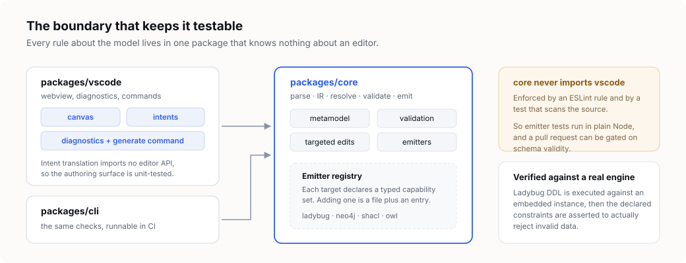

Why the file is the source of truth
The decisions behind LPG Modeler, including the ones that were rejected. If you are considering contributing a generator, or wondering why the metamodel stops where it does, start here.

The canonical artifact is text
The model is a hand-editable YAML file holding semantics only. Diagram coordinates live in a separate sidecar, so rearranging a diagram never dirties the semantic diff, and layout is keyed by stable element id rather than by type name — so renaming a type preserves its position on every diagram.
Owning no parser is a deliberate trade. YAML validated by a contributed JSON Schema means completion, hover and structural errors come from VS Code's existing tooling at no cost. A concise custom DSL with a real language server remains a later option rather than a prerequisite, because the durable asset was never the syntax.
The canvas is a companion, not a replacement editor
Registering the canvas as a CustomTextEditorProvider was rejected: it would
have become the default editor for model files and hidden the YAML, forfeiting exactly the
schema-driven completion that motivated choosing YAML in the first place. Instead it opens
beside the file, in the manner of Markdown preview.
Canvas edits reach the file as workspace edits, so VS Code owns undo and dirty state. The webview holds no model state at all: it posts a named intent, the extension host turns that into edits, and a fresh projection comes back — so nothing on screen can diverge from the file.

Targeted edits, never re-serialization
Every canvas action becomes a set of targeted text splices computed from the YAML syntax tree. This is not an optimization — it is the difference between a reviewable diff and an unreviewable one.
Document.toString() normalizes flow-collection padding across the whole file,
so re-serializing would turn a one-property change into a whole-file diff. Splicing keeps
the change minimal: renaming a type alters exactly the lines that name it. A block's extent
is found by indentation rather than by node range, because a YAML node's own range can run
past its block into whatever follows.
Two consequences fall out of this design. Deleting a node type also deletes the edge types that reference it, because leaving the reference behind would produce a model that cannot resolve. And renaming a type first records its previous IRI, so the ontology can assert equivalence to the identity consumers already have.
The package boundary
core holds parsing, the intermediate representation, validation and every
generator. cli wraps it for continuous integration. vscode adds
only webview and diagnostics plumbing.
core must never import vscode, enforced by an ESLint rule and by a
test that scans the source. That single rule is what keeps generator tests runnable in plain
Node with no editor harness — and it is what makes gating a pull request on schema validity
possible at all.
Views cap what any one diagram shows
A view names a subset of types plus an optional neighbourhood expansion, and layout nests under the view. One model can therefore carry an overview diagram beside several focused ones.
The alternative — welding diagram scope to module boundaries — was rejected because it would make people split modules for presentation reasons. Views drift as a model grows, so validation reports types that appear in no view.
This also sets the rendering budget. The canvas is built on React Flow with ELK for automatic layout; React Flow is DOM-based and degrades past a few hundred nodes, which is acceptable precisely because views cap how much any one diagram shows.

Modularity means two separate things
Models compose across files, and generators sit behind a registry. Only the first of those is a public feature today.
Model composition is a metamodel feature and cannot be retrofitted once models exist in the wild, so it landed first. A public plugin API is deliberately deferred until three real generators have shown where the seam actually falls — the capability matrix is what that API will eventually expose.
Verification
Every generator has golden-file tests for output stability. The Ladybug target additionally executes its generated DDL against an in-process LadybugDB instance, then asserts that the declared constraints actually reject invalid data.
Real execution is affordable here because the database is embedded — no container is
required. Neo4j and Memgraph have no embedded mode, so they keep golden coverage with
containerised tests gated behind an opt-in flag. A golden file alone only proves that output
has not changed, not that it is valid: the // versus -- comment
syntax bug in the Ladybug output was caught by execution and would have been invisible to a
golden test.
What is deliberately out of scope
- Nested edges. Edges that are themselves endpoints of other edges — the metagraph case — sit outside the core metamodel. Neo4j cannot represent them natively, so admitting them would force every generator to grow a silent reification path.
- Migrations and the lockfile diff. The intended design is a canonical, stable-ordered snapshot committed beside the model, diffed to produce an ordered migration script with renames detected through stable ids rather than guessed from structural similarity. Not in this release — but nothing in the implementation assumes a lockfile is absent, and the serializer already orders keys stably.
- The Memgraph target and user-supplied template targets. Both wait on the plugin seam described above.
- A generic Cypher target. Rejected outright rather than deferred: there is no reference implementation to test it against.
One amendment worth recording
The original plan deferred interactive editing to a second release and shipped a read-only canvas first. That was amended. Building the compiler first would have left the tool unusable for its stated purpose until v2, and the intermediate representation is exercised by every canvas action anyway — so real use validates the metamodel in a way that tests alone cannot.